Project Description
For this project, we will use Spark AR's Image Tracking feature to create an AR effect. When the camera detects the image we set, there will be some animation on the pop-up card.
This project is designed for Spark AR newbies. Screenshots of every step made will be provided in case you miss any details. After finishing this project, you will have a basic understanding of how to create an image-tracking AR effect.
Assets for this Project
Please download the assets and the sample project here: Project A - Snowman.zip
Preparing the Project
Create New Project
- Open Spark AR Studio and select “Create New” → “New Project”. 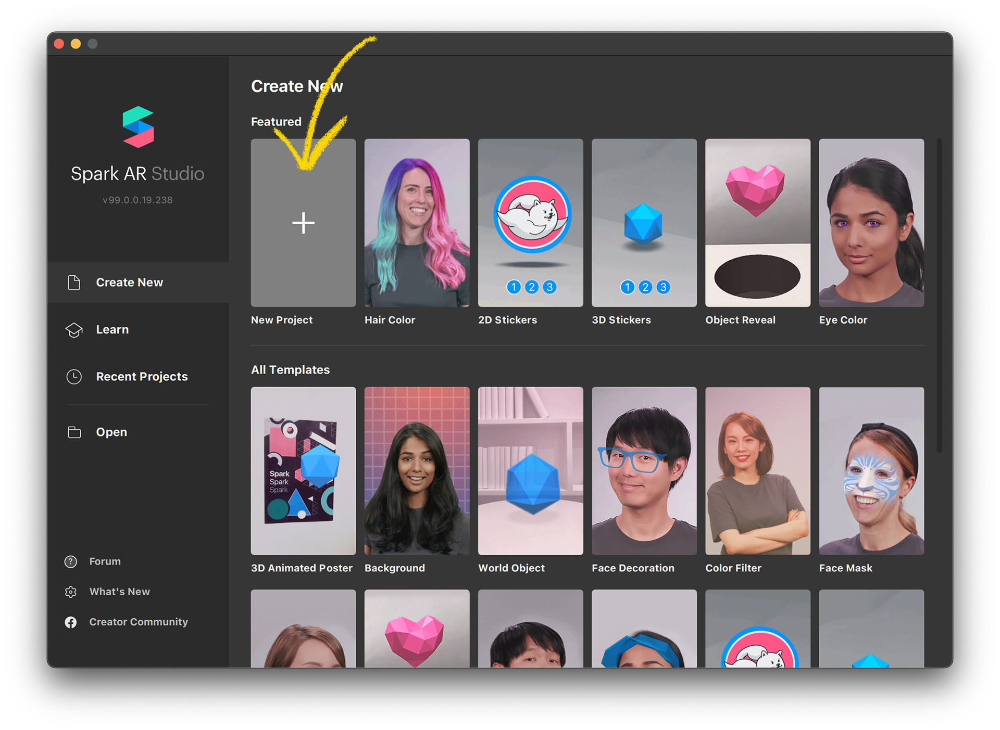
- Select “Target Tracking”.
- The project is now created with the Image Tracking feature enabled. There should be a fixedTargetTracker0 on the Scene panel. 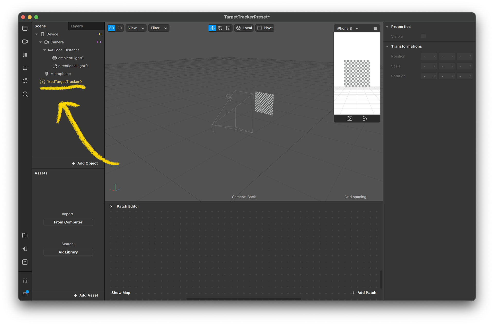
- If the fixedTargetTracker0 is not on your Scene panel, you can add it manually by right clicking the Scene panel and selecting “Add” → “Fixed Target Tracker”. 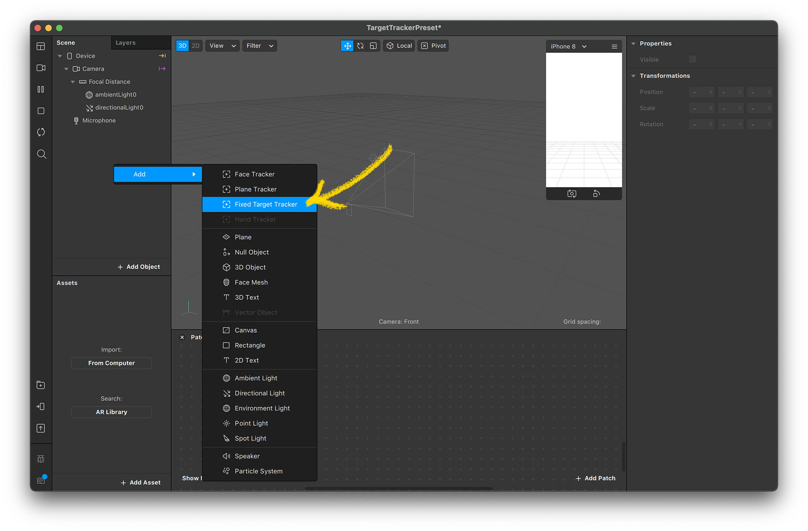

Import Assets from Computer
- On the Assets panel, click on “Add Asset” → “Import from Computer” and select all the downloaded assets.
- Now you will see all images in the textures folder in the assets panel. 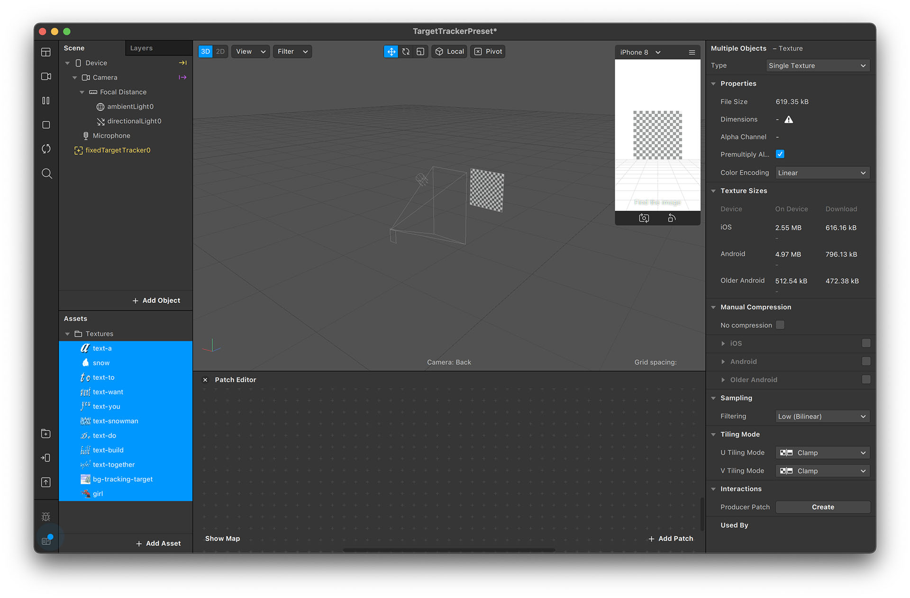


Set Up Image Tracking
Set Up Tracking Target Image
- Select fixedTargetTracker0 and you will see some options on the Properties panel on the right.
- Click on the small arrow beside “Texture” and select “bg-tracking-target”.
If you don't see these options, it's because you haven't imported the image assets. Re-do the steps in “Import Assets from Computer” and try again.
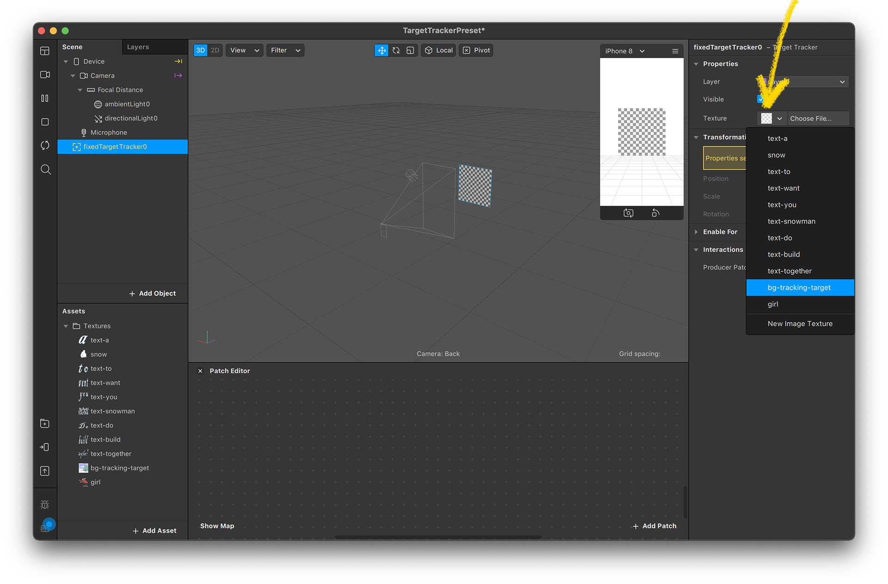
- The center plane will became the picture you picked. Now the project is able to recognize the image. 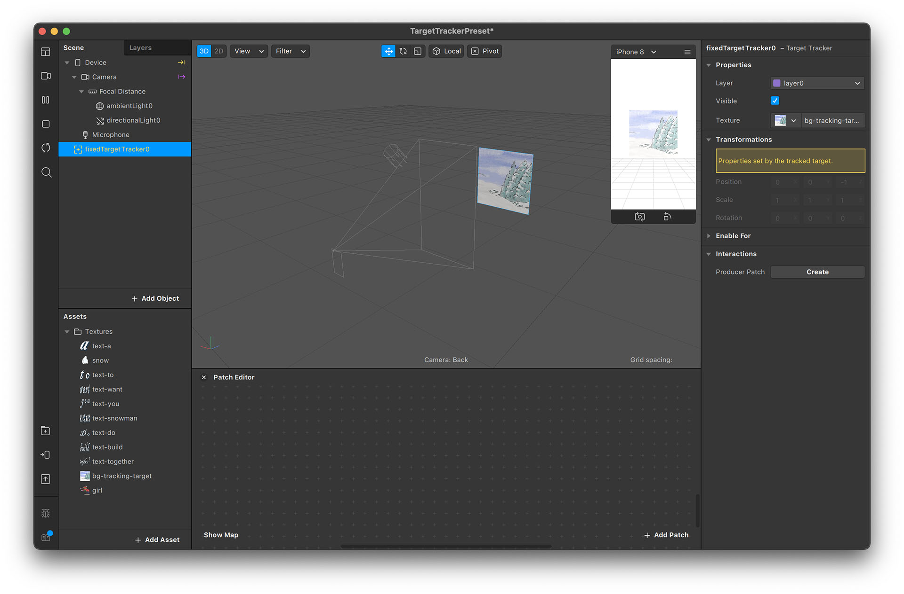
Test the Tracker Image
Not every image is good for tracking, so it's better to test the image tracking quality before we really go hands-on on the project.
- Right click on fixedTargetTracker0 and select “Add” → “Plane”. 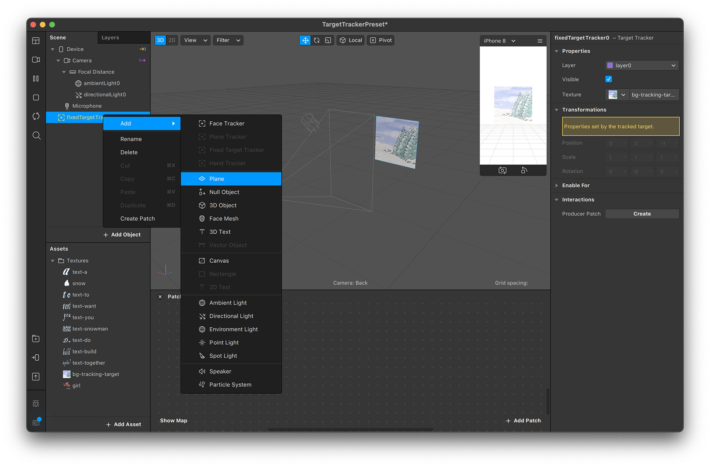
- Make sure the plane is under the fixedTargetTracker0 hierarchy.
If placed correctly, the position of the object's name in the scene panel will be slightly to the right and a small triangle will appear beside the fixedTargetTracker0. If you don't see this, you can drag the plane onto the fixedTargetTracker0. - Now we can test the tracking result. Since image tracking cannot be previewed in the simulator, the effect needs to be tested on our phones.
- Click “Test” on the device button and you can choose to upload the effect onto Facebook or Instagram. If you don't see either icons, click on the small triangle beside the “Send App” label.
- After the uploading process is done, you will receive a notification from the Facebook/Instagram app.
- Tap the notification to activate the device's camera to allow testing of the effect. Aim your phone at the card and you should able to see a rectangle in the background of the card. You can move slightly to see if the rectangle is fixed on to the background.
- If you do see a rectangle, that means the tracking function is working. Now we can prepare the augmented content.
*Test the Effect with the Spark AR Player App
If your internet is down or if you feel the results on your phone does not look the same as it does on the Spark AR Studio on your computer, try the Spark AR Player app for previewing. You can install your AR effects on your phone through a cable using the Spark AR Player.
For more information, please check the official guides: Previewing and Testing Effects and Mirroring Effects to AR Player
*Best Practice for the Tracker Image
The tracking quality is determined by the image design. If you would like to design your own tracking image, check out the official guideline: Best Practice for Target Tracking
Set Up Augmented Content
Materials in 3D
In 3D softwares, the image itself cannot be placed directly onto the scene. You will first need to define its “shape”—usually called “mesh”—and then define how the shape looks via “Material”. You can set up things like color, opacity, reflectiveness of the surface, etc.
So, if you want to put any images onto a 3D scene, you will need to create a material, select the texture as color image, and put this material onto a 3D object.
Don't worry about 3D object for now. During these tutorials, we will only use the built-in Plane object, which is simply a rectangle.
Adding the Girl into the Scene
- Create a material for the image of a girl image. Click “Add Asset” → “Material” on the Assets panel.
- Rename the material as “girl-mat”. Although this step is not necessary, it's good to make it a habit to name everything you create. Otherwise you may forget which material is for which object and the Assets panel would become a mess.
- Select the material we have just created and you should able to set its properties on the right panel. Click on the arrow beside Texture property and select the girl’s image.
- Check the “Alpha Test” option. This will erase the transparent part of the image. It might look odd due to layering issues. We will talk more about this in the next project.
- Now the material is ready. Next, we create the shape. Right click on fixedTargetTracker0 and select “Plane”.
- You can double click the plane in the Scene panel to rename it. I renamed mine to “girl-plane”.
- Now the girl-plane is overlaid with our previously-created plane0. Move it forward a bit to separate the two planes. 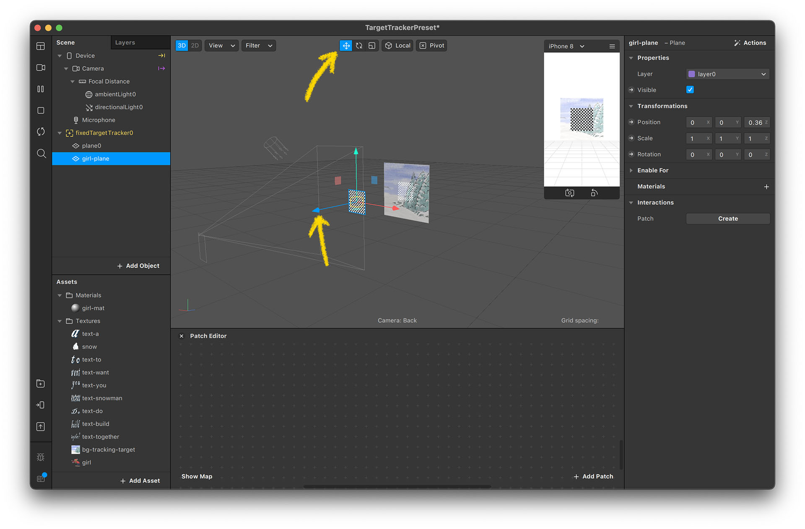
- Select the girl-plane in the Scene panel and click on the “+” next to the “Material” section on the right panel. You should then be able to see the material name you have just created.
- Now the plane has become the image you set. But the scale ratio is odd. This is because the material always fills the shape. So, we need to adjust the plane's size to make it look right.


Adjust Plane Scale to Fit Image Size Ratio
- Select the girl-image in the Assets panel to see its width and height. This one is 512 x 1024.
- Then, we adjust the girl-plane's scale to fit the ratio. You can directly calculate the ratio. The ratio for 512 and 1024 is 1:2. So you can set the girl-plane's x scale as 1 and y as 2. 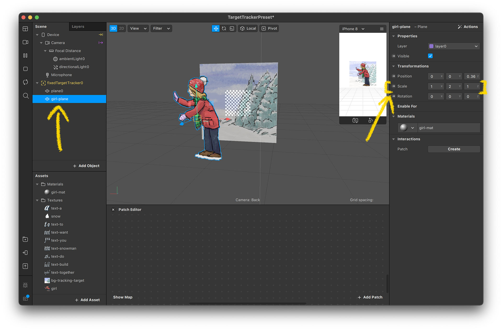
- Sometimes images' sizes are more complex. So, I like to simply key in their sizes divided by 1,000. In this case, set x to 0.512 and y to 1.024. The z scale generally doesn't matter, unless it's a 0, which might cause errors. 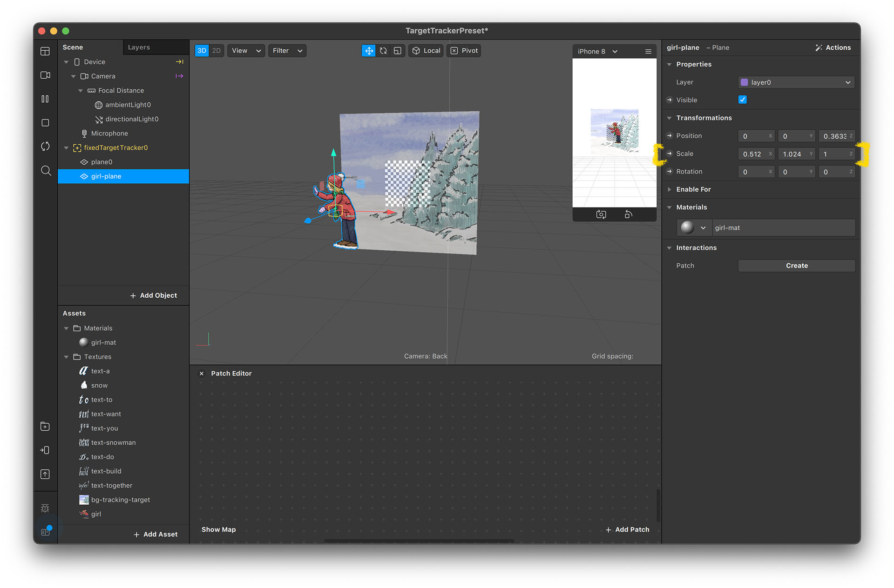
- You can then adjust the size by using the scale tool. If you scale the width and height simultaneously, the ratio will continue to be correct.


Position the Girl
- Place the girl beside the snowman. Though we can't see the snowman's position in the editor, we know the relationship between the background image and the snowman. Therefore, we can make an educated guess in the editor. 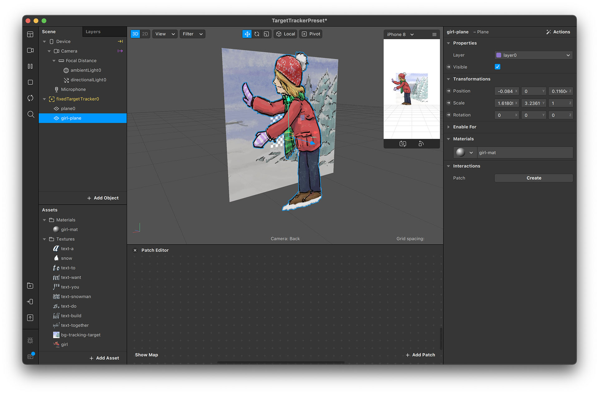
- Then, we preview the effect on our phones to see if it's correctly placed. If not, adjust and test on the device again. Repeat these steps until the result looks right.


*Move, Scale, Rotate objects
This official guide explains how to edit objects in the scene. If you are not familiar with 3D softwares, check these official guides:
Using the Manipulators
Navigating the Spark AR Studio Interface
Adding Texts
Similarly, place texts by simply creating a material for each image and place them in the scene. Since there are so many objects, it might be problematic aligning them one by one. So here is an additional grouping technique.
- Create multiple planes and materials for each text plane. Be sure to rename them or they might confuse you. 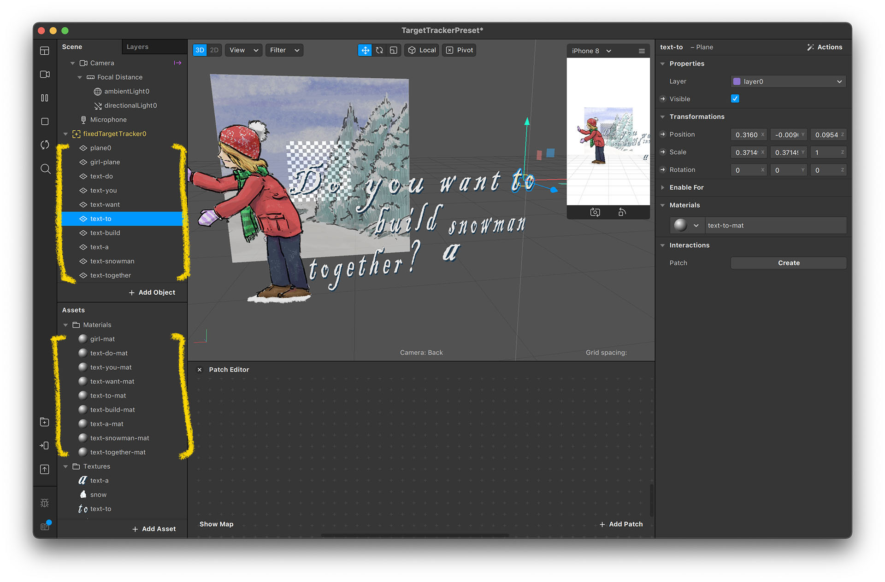
- Right click on fixedTargetTracker0 and select “Null Object”, which is an object that has transforming properties (position, scale, rotation) but nothing else.
- Rename to “text-set” and put all text planes under its hierarchy.
- Adjust the size and the position of each text plane. Lay them out as you desire. 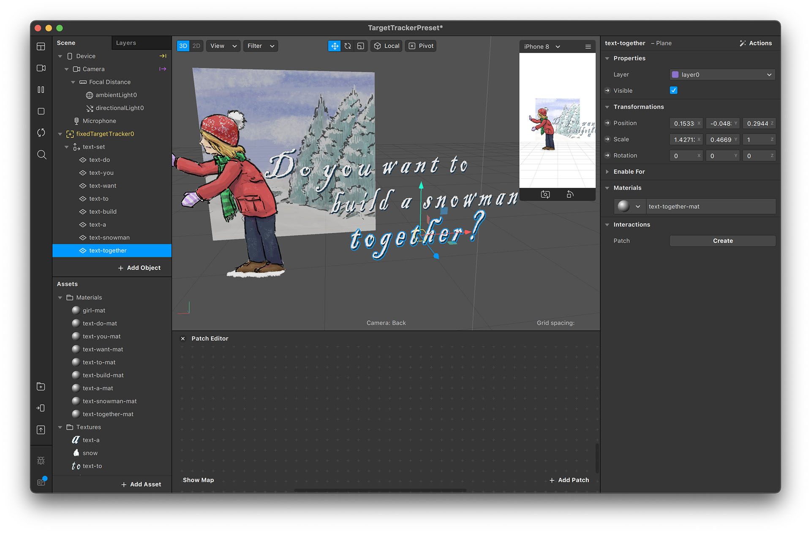
- Since all text planes are placed within the text-set, you can now move, rotate, or scale the entire text-set object.
- This way, you don't have to adjust them individually whenever you want to adjust the text's positioning on the card.


Animating with Patch Editor
Patch Editor is the most popular feature in Spark AR Studio. We can animate object values to create animations. We will now use this tool to make animations for our girl-plane and texts.
Test with Loop Animation
- Let's animate the person first. Select girl-plane and find the small “→” arrow beside its Scale property. Properties with this arrow means its value can be set through the Patch Editor. 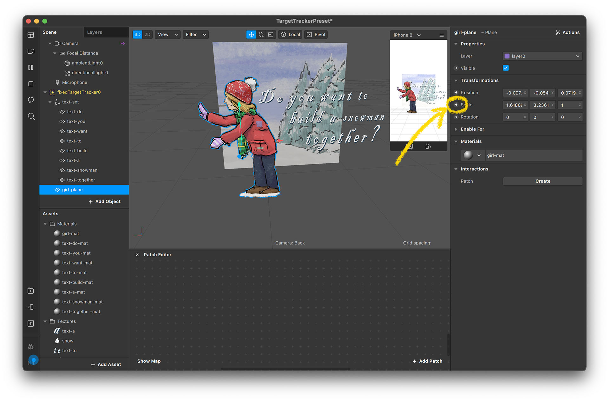
- Click on the arrow and the Patch Editor panel will appear, with a yellow box inside, which is the property patch we just selected. 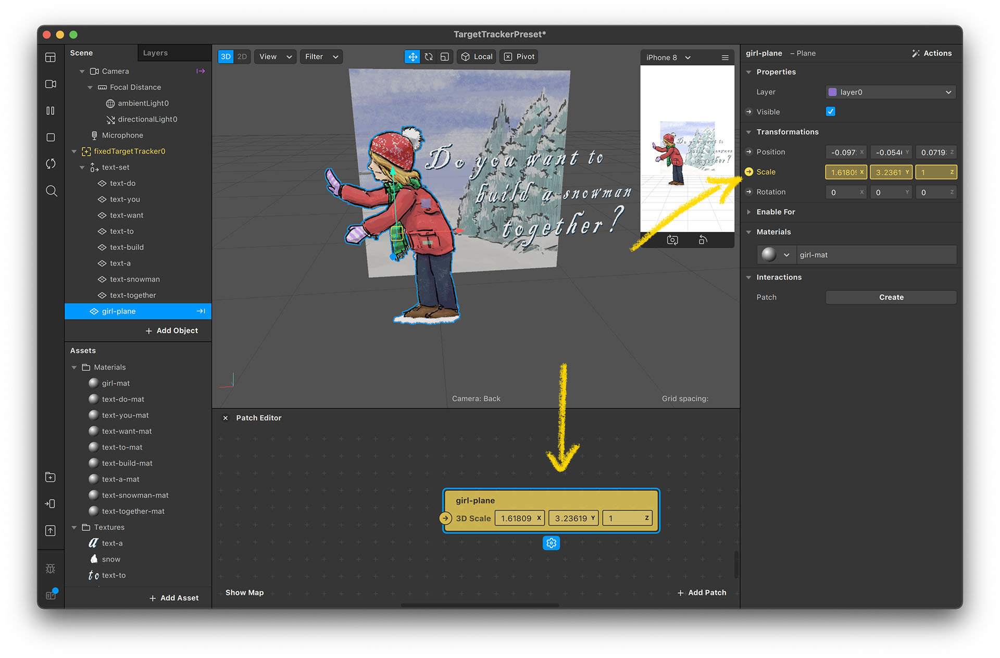
- Right click the Patch Editor panel or click the “+ Add Patch” button on the bottom right to add new patches. You can find the patch you need by browsing the categories or type in keywords to search.
- For now, add a "Transition" patch and a "Loop Animation" patch.
- Set the Transition patch's start values to 0, 0, 0 and end values to your girl-plane's current scale values—for me, it's (1.61809, 3.23619, 1)
- Each patch has inputs and outputs. The arrows on the left are inputs and on the right, outputs.
- You can connect inputs to outputs by left clicking and holding the output arrow, dragging to the other patch's input arrow.
- Connect the Loop Animation's progress output to Transform's progress input and Transform's value output to the girl-plane's 3D scale input. 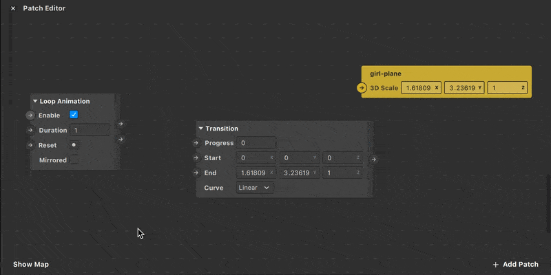
- You should now see the person-plane scaling up and down in a loop. 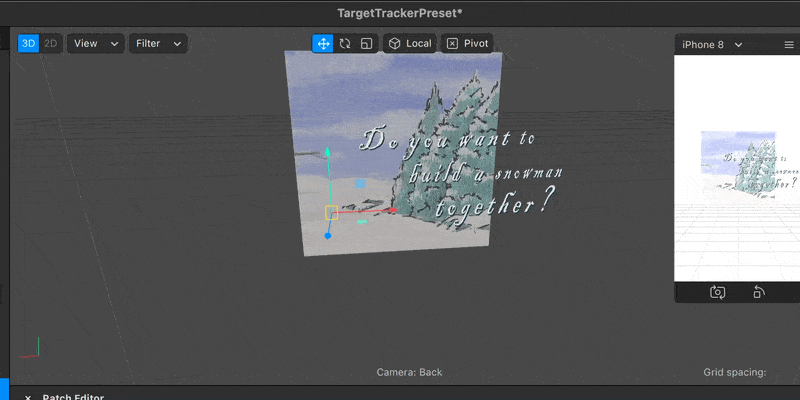
- You can change the curve value of the transition patch to set the animation's feelings. Select the one you like the most. 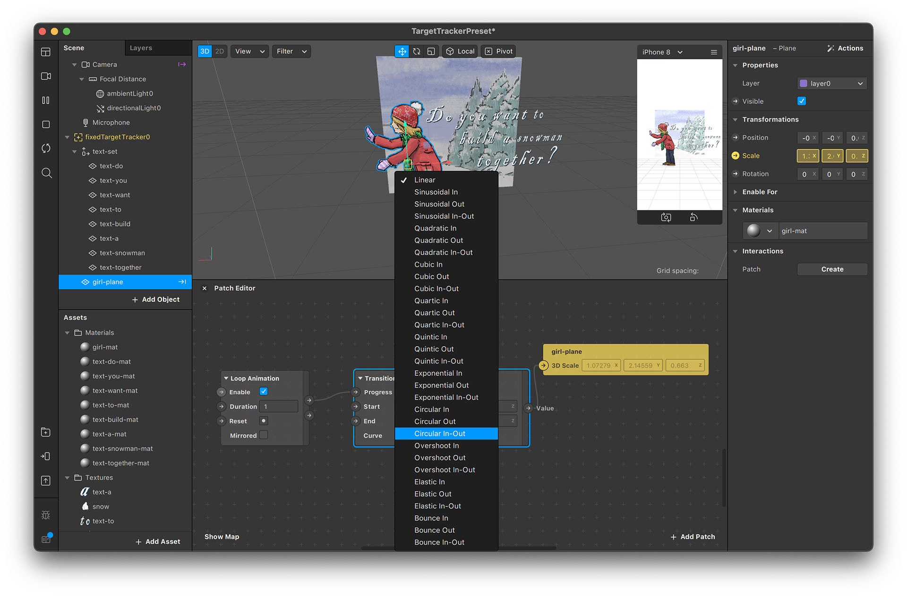


 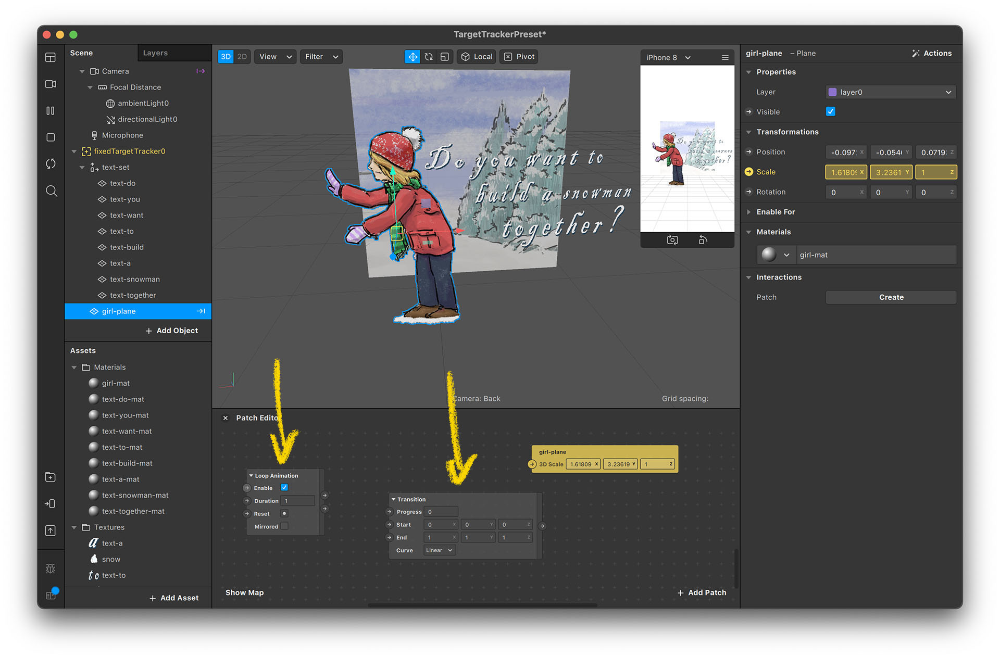
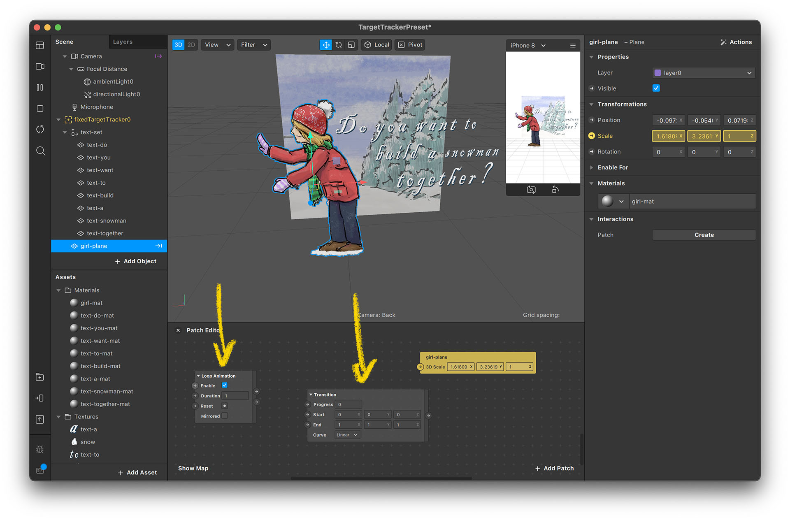


*Animation Curves
The curve in the transition patch is commonly used in the field of computer graphics. It's also called an easing type. If you're not familiar with the curve names, check the following website to find out what they do: easings.net
Set Up On-Track Action with Animation
The loop patch is good for previewing animations. However, instead of a loop animation, we actually want a one-time animation when the card is being detected. So, we will now replace the loop animation patch.
- Delete the loop animation patch. Instead, add an animation patch and connect the progress line. 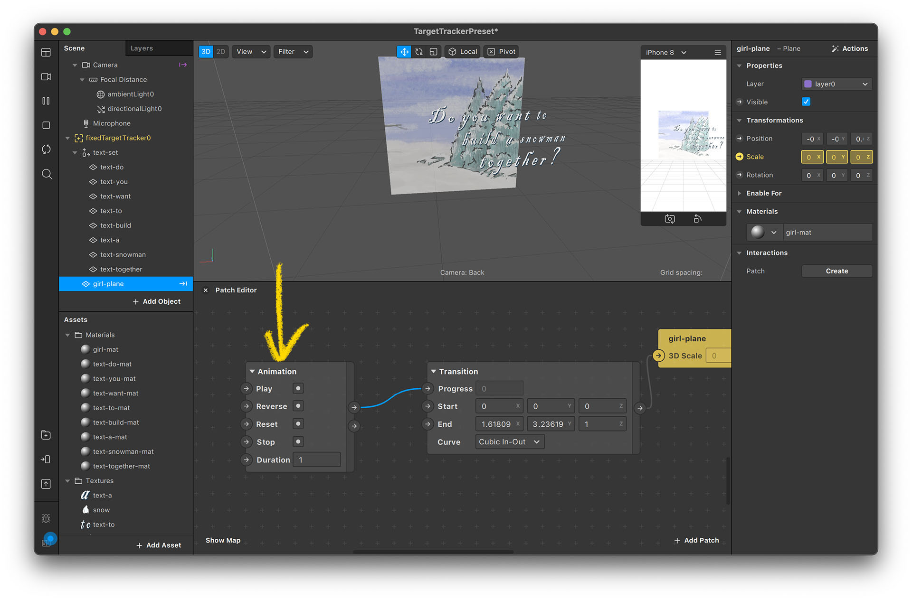
- We won't see any animations for now because it needs a trigger signal connected to "Play Animation".
- Drag the fixedTargetTracker0 to the Patch Editor panel. The system will create three patches for you.
- Connect the fixedTargetTracker0 patch “Found” output to “Play” the input of the animation patch.
- The system will automatically add a pulse patch to convert the value type to fit the patches' needs. 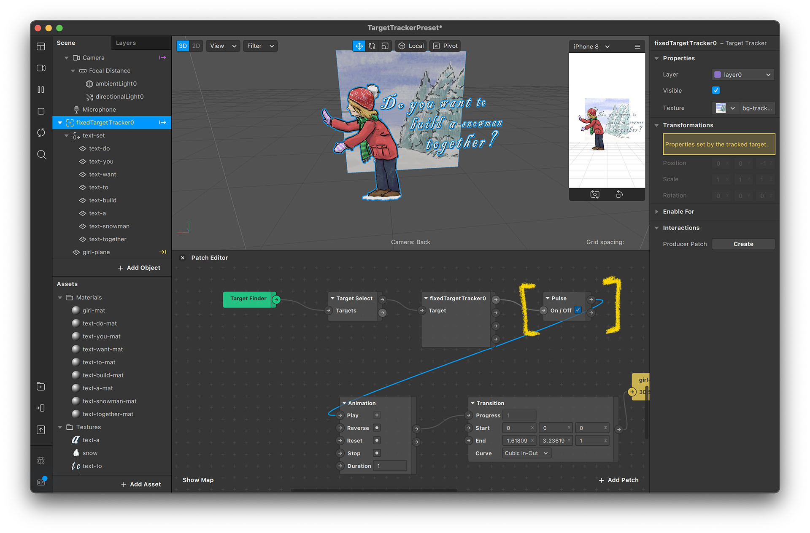
- Now you can try the effect on your phone. You should be able to see the girl scale up with the tracking triggered. 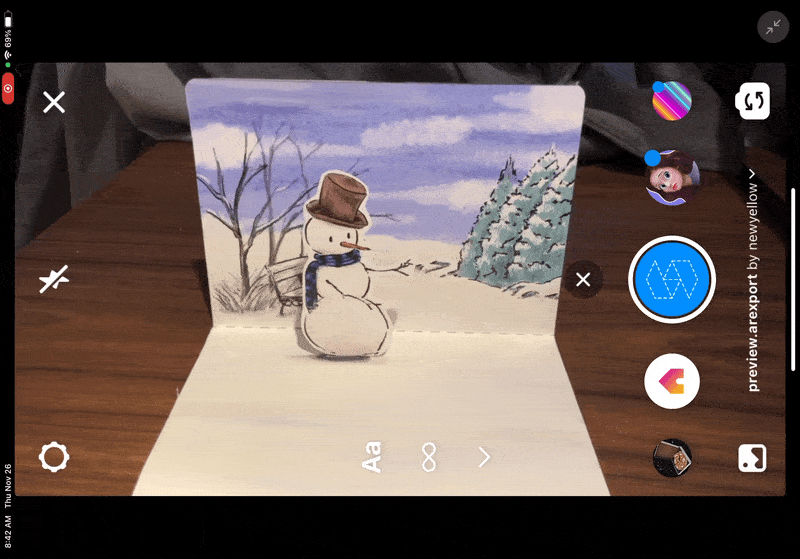

Queueing Animations
The setting of the text animations is the same. However, if you want to make an animation queue to produce something like a typing text effect, you can use the OnComplete output and Delay patch.
- Set up the text animations. The setting of each text animation is the same as above. 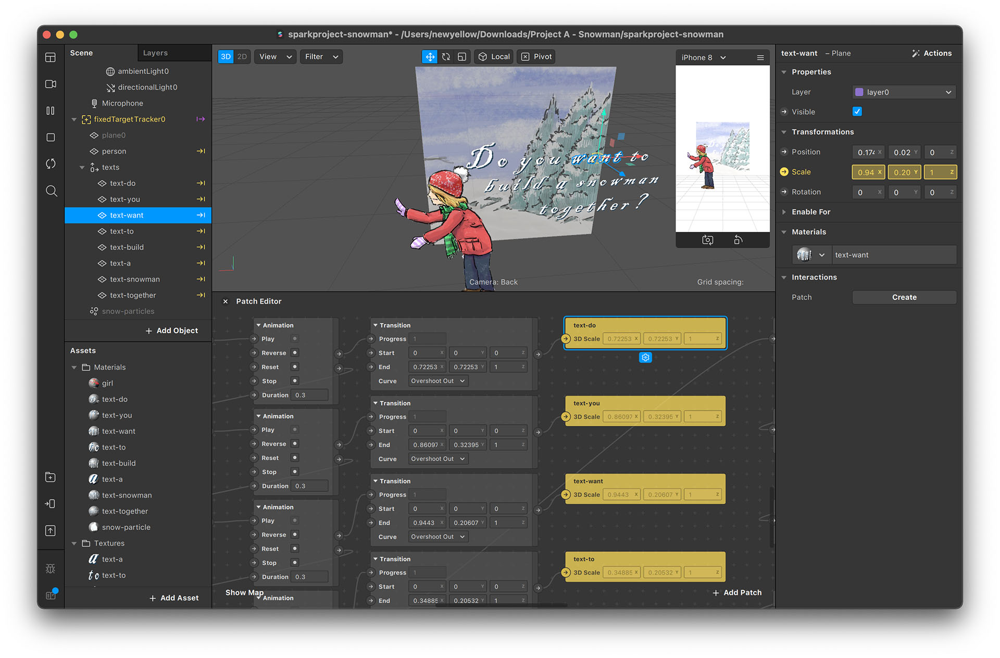
- You can connect the completed output of one animation patch to another’s play input. By doing so, the animations will be triggered one by one instead of everything animating at once. 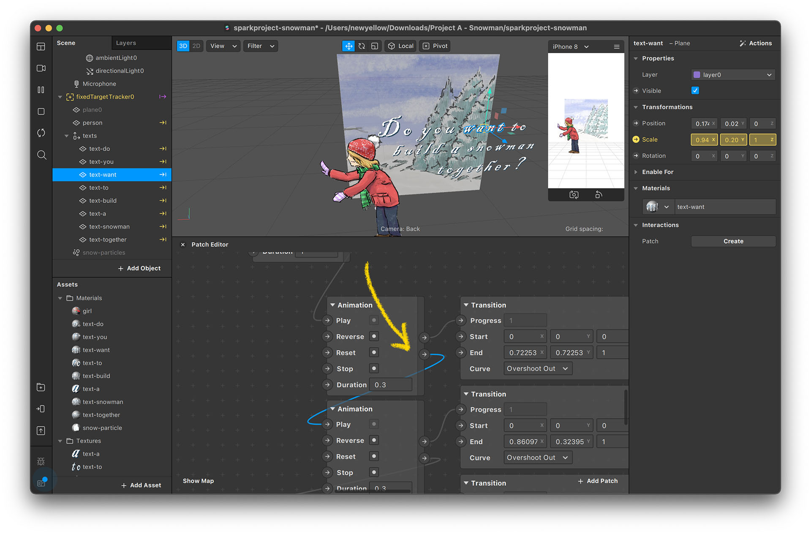
- You can add an additional delay patch to set up the delay time before the next animation is triggered. 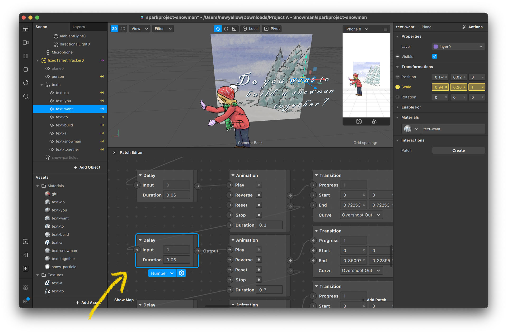
- If this is a bit complicated, please open the sample project to check its patch details. You can activate the Patch Editor panel by clicking “View” → “Show/Hide Patch Editor” if the Patch Editor doesn’t appear by default.

Create the Snow Effect
In order to create the snow effect, we need to use the particle system, a common feature in 3D softwares for creating non-solid objects like fire, water, smoke, etc. Spark AR Studio also has a particle system.
- Create a new material for the particle system. 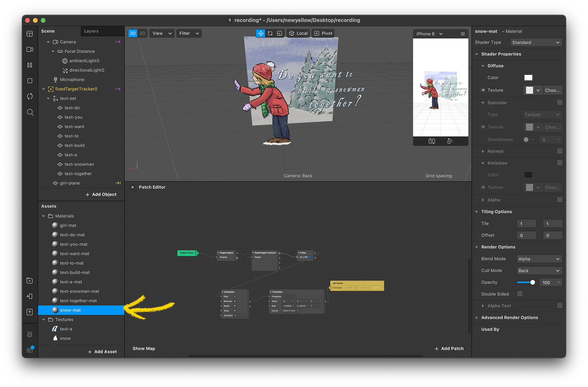
- Set shader type to flat, texture to snow, and blend mode to add. Check “Alpha Test”.
- Create a new particle system object by right clicking and selecting “Add” → “Particle System”.
- Set up the emitter section. Set type to plane, size to 0.3, 0.3 (this option will show after you set type to plane), and speed to 0.03, 60.
- Toggle the particle section. Set scale to 0.003, 60, lifespan to 2, 60, spin to 0, 180, and tilt to 0, 180.
- Set material to snow particle.
- Rotate the particle system object and position it above the person. Make the snow float down instead of up.


*Design Your Own Particle Effect
Designing and creating a particle system visual effect is all about tuning the parameters. You can play with the values and see what happens. That is the only way to master the particle system.
If you are interested, you can also refer to the official tutorial for adding and editing particle systems: Adding and Editing Particle Systems
And with that, the project is complete. Congratulations!
You should be able to see a final result as displayed in the video below: